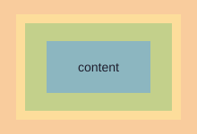

Kodėl verta naudoti border-box?

Numatytai width nurodo tik turinio plotį, todėl kiekvienas padding ir border pikselis padidina elementą. Kai keli stulpeliai turi tilpti į fiksuotą plotį, toks skaičiavimas greitai sugadina maketą.
Su box-sizing: border-box nurodytas plotis apima ir vidinę paraštę, ir rėmelį, todėl 300px elementas visada lieka 300px. Dėl to dauguma projektų šią taisyklę taiko visiems elementams.
Skaityti toliau